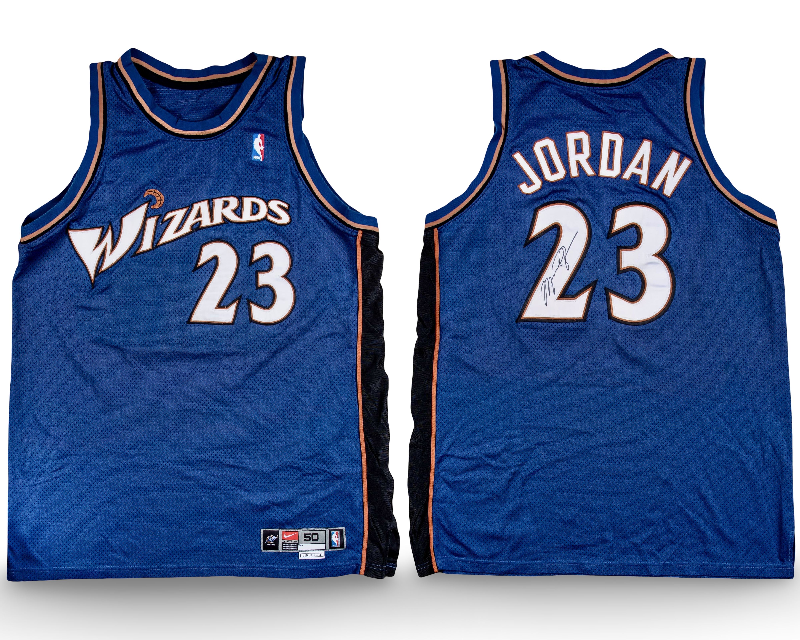

Jersey B
Season
2002-03
Confirmed Matches
14
Style
Away
Use
Regular Season
Last Updated: March 17, 2026
Public Sale Summary
| Auction House | Goldin Auctions |
| Sale Date | January 31, 2021 |
| Lot | 1 |
| Sale Price | $570,000 |
Archival Designation System
Each jersey is assigned a permanent archival designation (A, B, C, etc.). These identifiers represent distinct documented physical garments and remain fixed across preseason, regular season, postseason, and year transitions. The designation tracks the garment itself rather than a specific season or chronological sequence.

Publicly documented example
Heavy usage has been documented from February through April- including the final game of Jordan's career.
Photo Match Details
- Authentication: Yes
- Photo-Matched: Yes
- Photo-Matched By: MeiGrey, SIA
- Games Photo-Matched: 14
Documented Games
- Feb 25, 2003 — Indiana Pacers
- Mar 09, 2003 — New York Knicks
- Mar 14, 2003 — Detroit Pistons
- Mar 21, 2003 — Phoenix Suns
- Mar 23, 2003 — Golden State Warriors
- Mar 25, 2003 — Portland Trail Blazers
- Mar 26, 2003 — Seattle SuperSonics
- Mar 28, 2003 — Los Angeles Lakers
- Mar 30, 2003 — Denver Nuggets
- Apr 03, 2003 — Atlanta Hawks
- Apr 06, 2003 — Boston Celtics
- Apr 08, 2003 — Cleveland Cavaliers
- Apr 11, 2003 — Miami Heat
- Apr 16, 2003 — Philadelphia 76ers
Research & Provenance
This jersey comes with a Letter from George Koehler, (Michael Jordan's personal assistant) and autographed and authenticated by Beckett.